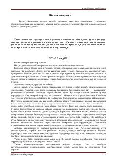

IUMa'naviy-axloqiy mavzulardagi ibratli hikmatlar va hayotiy mulohazalar to'plami.
Mazkur kitob muallifning hayotiy kuzatishlari, xalq hikmatlari va islomiy qadriyatlar asosida yozilgan asaridir. Unda insoniylik, axloq, birodarlik va zamonaviy muammolarning ma'naviy yechimlari haqida mulohazalar yuritiladi. Kitobxonni chuqur o'ylantiradigan va qalbiga yo'l topadigan ibratli hikoyalar jamlangan.